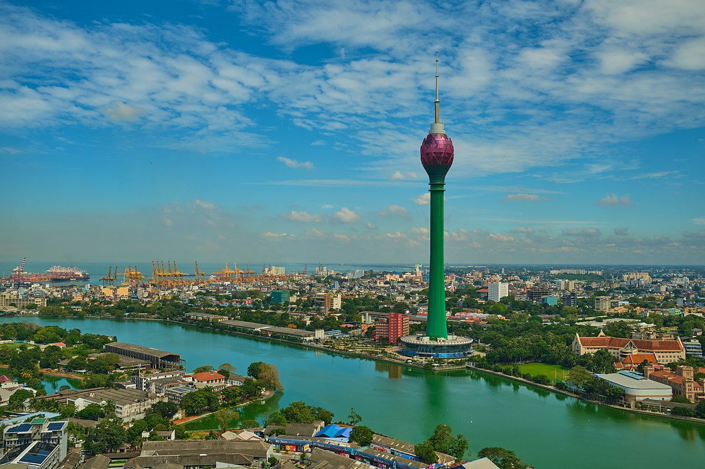
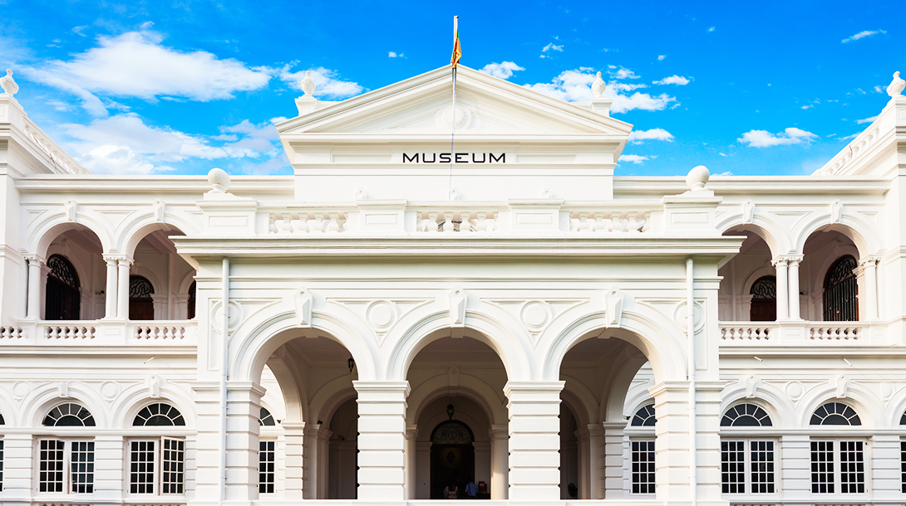
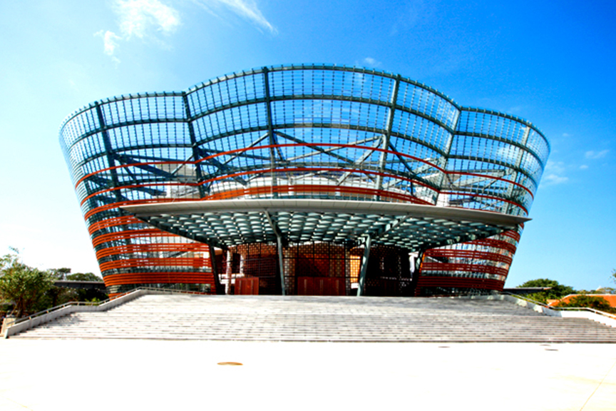
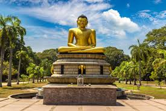
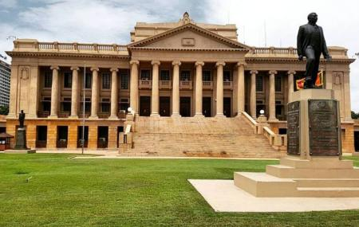

LOTUS TOWER
One of the coolest places to visit in Colombo is also one of the city's newest attractions. The Colombo Lotus Tower is South Asia's tallest freestanding structure (368 meters/1,168 feet), and a trip to the top rewards visitors with unobstructed views across Colombo and the surrounding cityscape and sea.The Lotus Tower, designed to replicate a lotus bulb and flower, simultaneously represents the historic culture of the country and its focus on the future.
NATIONAL MUSEUM OF COLOMBO
The National Museum of Colombo, also called the Sri Lanka National Museum, is the official museum of Sri Lanka and takes you on a journey over the thousands of years of Sri Lankan culture. It's one of those museums that has multiple types of media, from artwork to artifacts, as well as clothing, jewelry, coins, arms, and craftwork.
NELUM POKUNA
This large, modern performing arts complex hosts a wide range of music, dance, and cultural performances. It was recently renamed for the country's former president, Mahinda Rajapaksa. Like many other things in Sri Lanka, the design is intentionally reminiscent of a lotus flower.
VIHARAMAHADEVI PARK
This giant green space is Colombo's Central Park (and its only large open-space area) and provides areas to relax and enjoy (or escape from) the sunshine. The are many fountains in the park, as well as a small zoo. Kids will enjoy the playground. You can visit the Cenotaph (war memorial statue), as well as the national library, both of which are located in the park.
COLOMBO OLD PARLIMENT
Travelling past Colombo’s Galle Face Green towards the area known as Fort, a cityscape looms. In the background, silvery skyscrapers and cream-colored buildings dominate. You will notice a building close to the sea whose dimensions are in complete contrast, being several hundred meters long and only three storey’s high.
Discover destinations, find outdoor adventures, follow the journeys of our travel writers around the world, and be inspired.